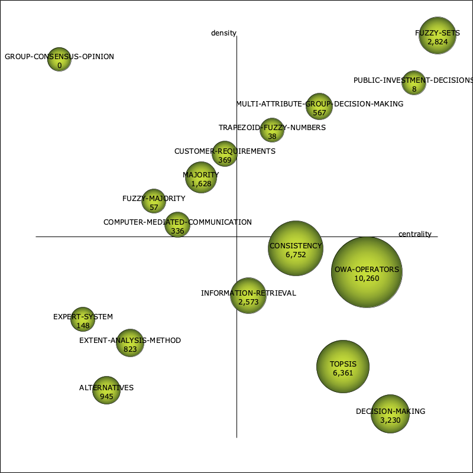

| Performance measure | Strategic diagram |
| unionDocuments-documentsCount | |
| unionDocuments-hIndex | |
| unionDocuments-sumCitations |  |
| Name | Centrality | Centrality range | Density | Density range |
| MULTI-ATTRIBUTE-GROUP-DECISION-MAKING | 30.09 | 0.71 | 84.23 | 0.82 |
| FUZZY-SETS | 135.26 | 1 | 120.69 | 1 |
| OWA-OPERATORS | 41.35 | 0.82 | 19.93 | 0.41 |
| CONSISTENCY | 29.76 | 0.65 | 22.33 | 0.47 |
| TOPSIS | 36.75 | 0.76 | 9.48 | 0.18 |
| DECISION-MAKING | 47.06 | 0.88 | 3.33 | 0.06 |
| INFORMATION-RETRIEVAL | 16.99 | 0.53 | 18.03 | 0.35 |
| COMPUTER-MEDIATED-COMMUNICATION | 9.89 | 0.35 | 25.33 | 0.53 |
| MAJORITY | 9.96 | 0.41 | 38.65 | 0.65 |
| ALTERNATIVES | 5.54 | 0.18 | 5.79 | 0.12 |
| CUSTOMER-REQUIREMENTS | 11.14 | 0.47 | 42.08 | 0.71 |
| EXPERT-SYSTEM | 0.48 | 0.12 | 15.77 | 0.29 |
| EXTENT-ANALYSIS-METHOD | 6.22 | 0.24 | 14.58 | 0.24 |
| GROUP-CONSENSUS-OPINION | 0 | 0.06 | 100 | 0.94 |
| PUBLIC-INVESTMENT-DECISIONS | 126.12 | 0.94 | 88.89 | 0.88 |
| TRAPEZOID-FUZZY-NUMBERS | 19 | 0.59 | 44.44 | 0.76 |
| FUZZY-MAJORITY | 7.56 | 0.29 | 33.33 | 0.59 |
| Name | unionDocumentsdocumentsCount | unionDocumentshIndex | unionDocumentssumCitations |
| MULTI-ATTRIBUTE-GROUP-DECISION-MAKING | 22 | 8 | 567 |
| FUZZY-SETS | 60 | 25 | 2,824 |
| OWA-OPERATORS | 176 | 46 | 10,260 |
| CONSISTENCY | 100 | 42 | 6,752 |
| TOPSIS | 83 | 35 | 6,361 |
| DECISION-MAKING | 109 | 29 | 3,230 |
| INFORMATION-RETRIEVAL | 35 | 19 | 2,573 |
| COMPUTER-MEDIATED-COMMUNICATION | 17 | 12 | 336 |
| MAJORITY | 27 | 13 | 1,628 |
| ALTERNATIVES | 40 | 16 | 945 |
| CUSTOMER-REQUIREMENTS | 7 | 7 | 369 |
| EXPERT-SYSTEM | 17 | 6 | 148 |
| EXTENT-ANALYSIS-METHOD | 12 | 9 | 823 |
| GROUP-CONSENSUS-OPINION | 2 | 0 | 0 |
| PUBLIC-INVESTMENT-DECISIONS | 6 | 2 | 8 |
| TRAPEZOID-FUZZY-NUMBERS | 3 | 1 | 38 |
| FUZZY-MAJORITY | 4 | 2 | 57 |